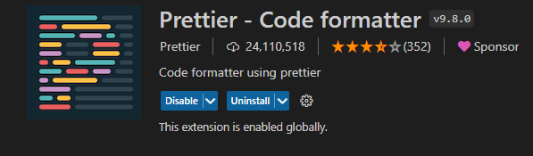
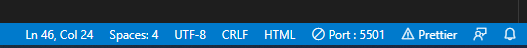
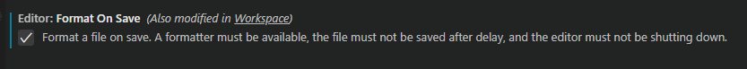
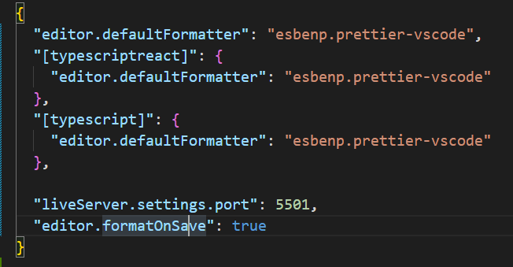

Prettier
vscode를 좀 더 편하게 사용하기 위해서 다양한 기능을 추가할 수
있습니다.
오늘은 다양한 기능 중에서 저장하면 자동정렬이 되는 Prettier를 설치하는
방법을 알아보겠습니다.
Prettier 적용하기
1. 우선 Extention에 들어가서 prettier을 다운받아 줍니다.

2. 다운이 완료되었다면 vscode를 껏다 켜주시고 밑에 prettier가 적용
되고있는지 확인합니다.

3. 적용이 되어있다면 Ctrl + s 를 눌렀을때 자동정렬이 되는지
확인합니다.
4. 정렬이 되지 않는다면 setting에 들어가서 editor format on save를
검색해 줍니다.
5. editor format on save의 체크박스를 체크해 줍니다. (그리고 다시
작동되는지 확인)

6. 그래도 적용되지 않는다면 f1키를 눌러 json 을 검색해서 Edit in
setting.json를 찾습니다.
7. 그 파일에 아래에 이미지에 있는 코드를 추가시켜주고 다시
확인해봅시다.
